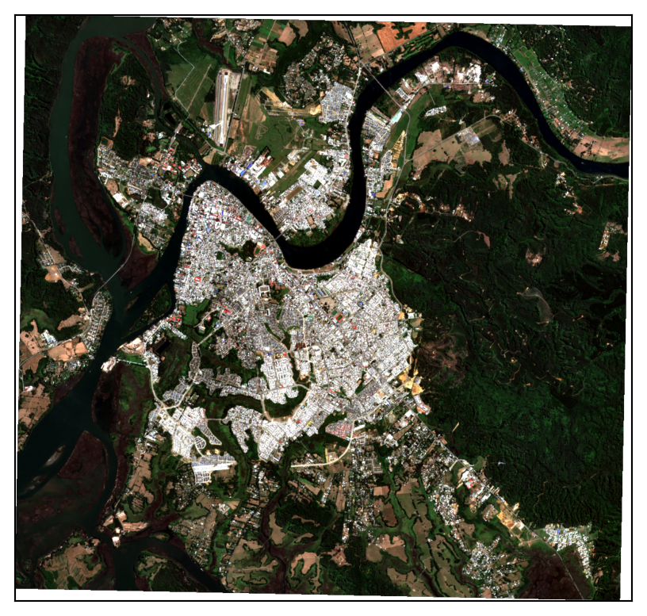
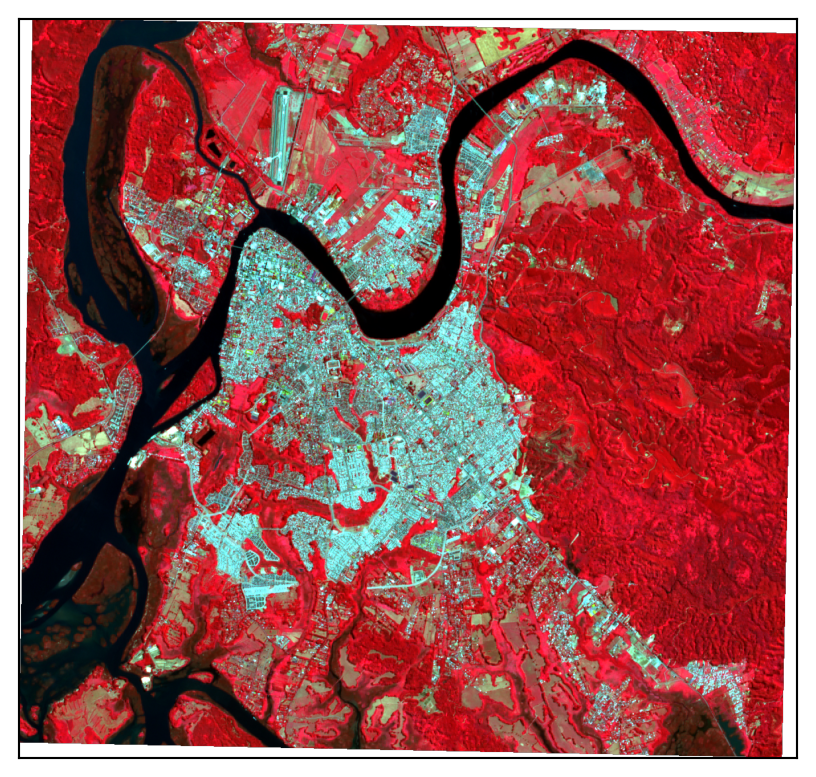

2 Fundamentos de Geomática y visualización de Datos Raster
En las Ciencias de los Tierra, existen principalmente dos formas de representar la realidad, los datos vectoriales y los datos raster.
2.1 Datos vectoriales
Los datos vectoriales están compuestos de posiciones geométricas discretas (valores x,y), conocidos como vértices, que definen la forma del objeto espacial. La organización de los vértices determina el tipo de vector con el que se está trabajando, existiendo tres tipos de datos, los puntos, las líneas y los polígonos. Entre los formatos más utilizados se encuentra el shapefile (.shp) o el GeoJSON (.geojson).
2.2 Datos Raster
Los rásters o cuadrículas son datos almacenados en una matriz de valores, representados como píxeles. Cada valor de píxel representa un área específica de la superficie terrestre, formando así el dato espacial. Un archivo ráster está compuesto por una cuadrícula regular de celdas de igual tamaño. Probablemente ya hemos utilizado datos ráster, como en fotografías digitales o imágenes de Google Earth. Sin embargo, los rásters que vamos a trabajar son distintos de las fotografías comunes, ya que están espacialmente referenciados. Esto significa que cada píxel representa una porción concreta de la superficie terrestre, lo cual se conoce como resolución espacial.
Los datos ráster pueden tener una o varias capas (también llamadas layers o variables). Por ejemplo, un modelo de elevación generalmente incluye solo una capa que representa la altitud de la superficie terrestre en un área determinada. Sin embargo, otros tipos de datos, como imágenes multiespectrales o series temporales, pueden producir un ráster compuesto por varias capas.
2.3 Sistemas de referencia
Es muy común que se obtengan datos espaciales desde distintas fuentes y que esos datos cubran diferentes extensiones espaciales. Este tipo de datos espaciales se encuentran a menudo en diferentes Sistemas de Referencia de Coordenadas (CRS, por sus siglas en inglés). En el caso de que se quiera trabajar con datos en distints CRS deberemos reproyectarlos. Sin embargo, es importante mencionar que cuando reproyectamos los datos, los estamos modificando. De esta forma estamos introduciendo alguna incerteza en nuestros datos. Mientras que esta incerteza es ligeramente menos importante en los datos vectoriales que en los raster, es necesario considerarla. Por otra parte, si solo se reproyecta para crear un mapa base, no es importante.
2.4 Formación del color
La teoría aditiva del color explica cómo se forma el color mediante la combinación de luces de diferentes colores, especialmente los colores primarios de la luz: rojo, verde y azul (RGB). Cuando estos colores de luz se mezclan en diversas intensidades, generan una gama completa de colores.
En un monitor de computadora, cada píxel está compuesto por subpíxeles rojo, verde y azul. Al ajustar la intensidad de cada subpíxel, el monitor produce diferentes colores visibles.
En las imágenes de satélite, esta teoría se aplica para representar las bandas espectrales. Cada banda (p. ej., visible, infrarrojo) se asigna a un canal de color (R, G, B) para crear una composición de color que permite observar características específicas de la superficie terrestre.
2.5 Tipos de imagenes
Anteriormente ya mencionamos que existen diferentes tipos de imágenes, desde aquellas que almacenan solo una variable, hasta las que contienen varias o cientos.
Monobanda
Son aquellas que solo almacenan una variable o layer. Es común encontrar este tipo de imágenes para almacenar y representar datos de tipo continuo, como la temperatura superficial o la reflectancia. No obstante, se usan también para representar variables de tipo discretas como las categorías de un sistema de clasificación.
Multiespectral
Las imágenes multiespectrales son raster que poseen datos en varias bandas del espectro electromagnético. Cada banda representa una parte diferente del espectro, por ejemplo, visible, infrarrojo cercano, infrarrojo medio, etc. Las bandas son herramientas analíticas de la superficie terrestre. Por ejemplo, la imagen de un satélite multiespectral tiene bandas para:
Luz visible (rojo, verde, azul [RGB])
Infrarrojo cercano (NIR)
Infrarrojo medio (MIR)
Otras
Estas bandas se pueden combinar con los colores RGB que proporcionan los monitores para obtener distintas composiciones que resaltan características específicas, como la vegetación o el agua.


2.6 Plataformas y fuentes de datos satelitales
Existen diversas plataformas y fuentes de datos satelitales que proporcionan imágenes y datos geoespaciales para una amplia variedad de aplicaciones.
Terra - Aqua- MODIS
MODIS es el Moderate-Resolution Imaging Spectroradiometer abordo de satélites Terra y Aqua de la NASA. Es capaz de capturar 36 bandas espectrales con una resolución espacial desde 250 metros a 1 kilómetro. Es ampliamente ocupado debido a su alta resolución temporal (nivel diario).
| Band | Reflected Range (nm) | Emitted Range (µm) | Band Explanation | Primary Use |
|---|---|---|---|---|
| 1 | 620-670 | Shortwave/VIS | ||
| 2 | 841-876 | Shortwave/NIR | Land/Cloud/Aerosol Properties | |
| 3 | 459-479 | Shortwave/VIS | Land/Cloud/Aerosol Properties | |
| 4 | 545-565 | Shortwave/VIS | Land/Cloud/Aerosol Properties | |
| 5 | 1230-1250 | Shortwave/NIR | Land/Cloud/Aerosol Properties | |
| 6 | 1628-1652 | Shortwave Infrared/SWIR | Land/Cloud/Aerosol Properties | |
| 7 | 2105-2155 | Shortwave Infrared/SWIR | ||
| 8 | 405-420 | Shortwave/VIS | ||
| 9 | 438-448 | Shortwave/VIS | ||
| 10 | 483-493 | Shortwave/VIS | ||
| 11 | 526-536 | Shortwave/VIS | ||
| 12 | 546-556 | Shortwave/VIS | ||
| 13 | 662-672 | Shortwave/VIS | ||
| 13h | 662-672 | Shortwave/VIS | ||
| 14 | 673-683 | Shortwave/VIS | ||
| 14h | 673-683 | Shortwave/VIS | ||
| 15 | 743-753 | Shortwave/VIS | ||
| 16 | 862-877 | Shortwave/NIR | ||
| 17 | 890-920 | Shortwave/NIR | Atmospheric Water Vapor | |
| 18 | 931-941 | Shortwave/NIR | Atmospheric Water Vapor | |
| 19 | 915-965 | Shortwave/NIR | Atmospheric Water Vapor | |
| 20 | 3.660-3.840 | Longwave thermal Infrared/TIR | ||
| 21 | 3.929-3.989 | Longwave thermal Infrared/TIR | ||
| 22 | 3.929-3.989 | Longwave thermal Infrared/TIR | ||
| 23 | 4.020-4.080 | Longwave thermal Infrared/TIR | ||
| 24 | 4.433-4.498 | Longwave thermal Infrared/TIR | Atmospheric Temperature | |
| 25 | 4.482-4.549 | Longwave thermal Infrared/TIR | Atmospheric Temperature | |
| 26 | 1360-1390 | Shortwave/NIR | ||
| 27 | 6.535-6.895 | Longwave thermal Infrared/TIR | ||
| 28 | 7.175-7.475 | Longwave thermal Infrared/TIR | ||
| 29 | 8.400-8.700 | Longwave thermal Infrared/TIR | Cloud Properties | |
| 30 | 9.580-9.880 | Longwave thermal Infrared/TIR | ||
| 31 | 10.780-11.280 | Longwave thermal Infrared/TIR | Surface/Cloud Temperature | |
| 32 | 11.770-12.270 | Longwave thermal Infrared/TIR | Surface/Cloud Temperature | |
| 33 | 13.185-13.485 | Longwave thermal Infrared/TIR | ||
| 34 | 13.485-13.785 | Longwave thermal Infrared/TIR | ||
| 35 | 13.785-14.085 | Longwave thermal Infrared/TIR | ||
| 36 | 14.085-14.385 | Longwave thermal Infrared/TIR |
Landsat
El programa Landsat son una seria de misiones satelitáles gestionadas por la NASA y el Servicio Geológico de Estados Unidos (USGS). Desde 1972 han proporcionado imágenes multiespectrales de alta resolción (30 metros) y va continuamente lanzando nuevos satélites. El último ha sido Landsat 9, que fue lanzado el 2021 mejorando la calidad y adquisición de las imágenes de su antecesor (Landsat 8).
Sentinel
Es un programa comandado por la Agencia Espacial Europea (ESA), lanzando distintas misiones llamadas Sentinel. Al igual que Landsat, proporciona imágenes de alta resolucion para el monitoreo del Medio Ambiente. El último lanzamiento fue en 2015, el cual consta de dos satélites, Sentinel-2A y Sentinel-2B, capturando 13 bandas y una resolución que varía desde los 10 a 60 metros.
2.7 Dentro de Python
En Python las librerías principales para poder trabajar con datos raster son rasterio y earthpy. rasterio es una librería de Python diseñada para leer y escribir datos raster geoespaciales, mientras que earthpy facilita el manejo de multiples tipos de datos, lidiando con su descarga, descompresión y visualización.
Por ejemplo, se cargará e imprimirá la información de un raster de elevación (DEM)
La imagen tiene 1 bandas.
La imagen tiene EPSG:32613.A través de earthpy podemos visualizarlo:
Ejercicios
Cargar DEM de Valdi
Exportar el Sentinel con todas sus bandas
Jugar con la composicion de color